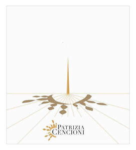

Trade Mark Journal No.2025/030 25 July 2025
UK00004232403 11 July 2025 (33,35)

- Class 33
- Wine; Grape wine; Sparkling grape wine; Sparkling wine; Mulled wine; Fruit wine; Red wine; Rice wine; Blackberry wine; Cooking wine; Strawberry wine; Sparkling fruit wine; Wines; White wine; Sweet wine; Aperitif wines; Wine coolers [drinks]; Mulled wines; Sparkling wines; Beverages containing wine [spritzers]; Dessert wines; Low-alcoholic wine; Alcoholic wines; Still wine; Red wines; Sparkling red wines; White wines; Table wines; Sparkling white wines; Fortified wines; Rose wines; Sweet wines; Wine-based drinks; Wine-based beverages; Natural sparkling wines; Wine-based aperitifs; Naturally sparkling wines.
- Class 35
- Sales promotions at point of purchase or sale, for others; Sales promotion; Publicity and sales promotion; Promotion services; Business promotion; Publicity and sales promotion services; Promotion [advertising] of concerts; Advertising and promotion services; Modelling for advertising or sales promotion; Promotion [advertising] of business; Modeling for advertising or sales promotion; Sales promotion services; Promotion [advertising] of travel; Advertising, marketing and promotion services; Marketing, advertising and promotion services; Sales promotion for others; Promotion of special events; Export promotion services; Administration of sales promotion incentive programs; Business promotion services; Advertising services for the promotion of beverages; Promotion, advertising and marketing of on-line websites; Promotion of goods and services through sponsorship; Marketing, advertising, and promotional services; Advertising and promotional services; Promotional and advertising services; Promotional advertising services; Advertising and publicity.
Azienda Agricola Patrizia Cencioni
Representative: Hepworth Browne